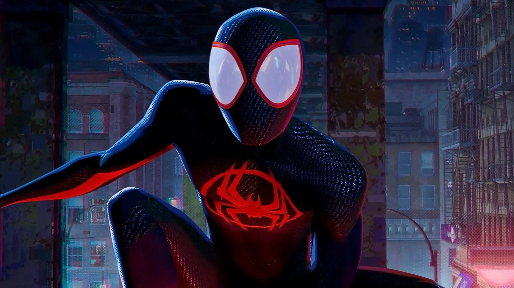

Un Nuevo Spiderman Emergente: ¿Héroe o Problema en el Horizonte?
Por J. Jonah Jameson
Nueva York, 14 de abril de 2024
¡Alerta, ciudadanos de Nueva York! ¡Hay un nuevo Spiderman en la ciudad, y este no es como los demás! Desde los oscuros callejones de nuestra metrópolis hasta los rascacielos que definen nuestro horizonte, un enmascarado más joven con un traje negro ha comenzado a tejer su tela en la Gran Manzana. Pero, ¿es este nuevo "héroe" una bendición o una nueva fuente de problemas para nuestra querida ciudad?
Como siempre, mi escepticismo hacia Spiderman es bien conocido. No me malinterpreten, estoy agradecido por cualquier ayuda que se ofrezca para proteger a nuestra ciudad, pero con tantas versiones de Spiderman apareciendo y desapareciendo, es difícil no cuestionar las intenciones y la competencia de estos autoproclamados "defensores de la justicia". Este nuevo Spiderman, con su traje negro y su aparente juventud, ha llamado la atención de muchos, incluido un servidor. ¿Quién es este enmascarado que se mueve con tanta agilidad y destreza por nuestras calles? ¿Y qué lo hace diferente de los Spiderman anteriores? Lo que me preocupa especialmente es la falta de transparencia y la incertidumbre que rodea a este nuevo Spiderman. A diferencia de los anteriores, este joven enmascarado parece más reacio a revelar su identidad o sus intenciones. Y aunque algunos podrían argumentar que su misterio lo hace más intrigante, para mí, solo aumenta la preocupación y la desconfianza hacia él. Además, con tantos Spiderman apareciendo y desapareciendo, uno tiene que preguntarse: ¿cuántos más vendrán? ¿Y qué pasa con la continuidad y la responsabilidad? No podemos permitirnos confiar en un enmascarado tras otro sin saber quiénes son realmente ni qué pretenden hacer en nuestra ciudad. A medida que este nuevo Spiderman continúa patrullando nuestras calles, insto a los ciudadanos de Nueva York a permanecer vigilantes y a cuestionar la verdadera naturaleza de este enmascarado. No podemos permitir que la emoción del momento nos ciegue ante los riesgos potenciales que representa. El Daily Bugle seguirá investigando y proporcionará a los ciudadanos de Nueva York actualizaciones sobre este enmascarado misterioso y las implicaciones de su aparición en nuestra ciudad. Pero recuerden, en tiempos de incertidumbre, es esencial mantenernos informados y unidos como comunidad para garantizar la seguridad y el bienestar de todos.